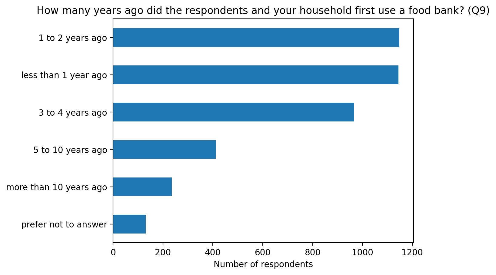

import numpy as np
import matplotlib.pyplot as plt
import plotly.express as px
import pandas as pdData for Good Ottawa - Ottawa Food Bank Project - Summer 2024 - UNREVISED DRAFT
Introduction
The Data For Good Ottawa is a organisation of volunteers who want to use their data skills for good and to help their communities.
For their summer 2024 event, Data For Good Ottawa paired with the Ottawa Food Bank (OFB) to gain insight about their users. To do so, the OFB invited food program visitors to answer a Neighbour Survey (NS) in exchange of a $10 grocery certificate.
Over 4000 participants, between April and May 2024, took part to the online survey which included 42 questions related to food security, food bank experience, unique needs, health, wellbeing, and demographics. All survey questions are includes in the appendix (see Table 1.)
The research question posed by the OFB is “What is the relationship between food security status and health/demographics/needs in our sample?”
The concept of food security is often attributed to the 1996 World Food Summit and defined as “Food security exists when all people, at all times, have physical and economic access to sufficient, safe and nutritious food that meets their dietary needs and food preferences for an active and healthy life” FAO, 2006. This definition includes the following dimensions:
Food availability: The availability of sufficient quantities of food of appropriate quality, supplied through domestic production or imports (including food aid).
Food access: Access by individuals to adequate resources (entitlements) for acquiring appropriate foods for a nutritious diet. Entitlements are defined as the set of all commodity bundles over which a person can establish command given the legal, political, economic and social arrangements of the community in which they live (including traditional rights such as access to common resources).
Utilization: Utilization of food through adequate diet, clean water, sanitation and health care to reach a state of nutritional well-being where all physiological needs are met. This brings out the importance of non-food inputs in food security.
Stability: To be food secure, a population, household or individual must have access to adequate food at all times. They should not risk losing access to food as a consequence of sudden shocks (e.g. an economic or climatic crisis) or cyclical events (e.g. seasonal food insecurity).
Exploratory Data Analysis
The code, but not the data, for this page is available on GitHub. This section includes some initial data preparation and exploration of the NS results.
Setup
Data import
OFB shared data with DFG volunteers as csv files.
df = pd.read_csv("./data/raw/neighbour_survey_clean-2024-06-14.csv")Data cleaning
The data was cleaned by applying the following steps: (1) normalizing spelling when necessary, (2) collapsing some categories for some questions.
As we are dealing with categorical data, we will convert strings to categories.
Answers to question 9 (“How many years ago did you and your household first use a food bank?”“) were collapsed before and after 2020.
Data exploration
The survey was available in four languages. Most repondents answered in English (83%), followed by French (9%), Arabic (6%), and Simplified Chinese (2%).
q001
English 3387
French 361
Arabic 241
Simplified Chinese 65
Name: count, dtype: int64Data visualisation


Data Analysis
Response rate
Interpretation
Limitation
Appendix - Survey questions
| No | Question | Data | Levels |
|---|---|---|---|
| id | Participant | ID | NA |
| 001 | Language of survey | factor | Arabic; English; French; Simplified Chinese |
| 002 | Is your income enough to meet your food needs? | factor | no; prefer not to answer; yes |
| 003 | How often did the following occur in the last 12 months? “The food that I bought just didn’t last, and I didn’t have money to get more.” | factor | don’t know; never true; often true; prefer not to answer; sometimes true |
| 004 | How often did the following occur in the last 12 months? I couldn’t afford to eat nutritionally balanced meals. | factor | don’t know; never true; often true; prefer not to answer; sometimes true |
| 005 | In the last 12 months, did you ever cut the size of your meals or skip meals because there wasn’t enough money for food? | factor | don’t know; no; prefer not to answer; yes |
| 006 | How often did this happen in the last 12 months? | factor | almost every month; did not happen; don’t know; only 1 or 2 months; prefer not to answer; some months but not every month |
| 007 | In the last 12 months, did you ever eat less than you felt you should because there wasn’t enough money for food? | factor | don’t know; no; prefer not to answer; yes |
| 008 | In the last 12 months, were you ever hungry but didn’t eat because there wasn’t enough money for food? | factor | don’t know; no; prefer not to answer; yes |
| 009 | How many years ago did you and your household first use a food bank? | factor | 1 to 2 years ago; 3 to 4 years ago; 5 to 10 years ago; less than 1 year ago; more than 10 years ago; prefer not to answer |
| 010 | How often do you visit a food bank? | factor | every 6 months; every two months; less than twice a year; once per month; other; prefer not to answer; two times per month |
| 011 | Food programs include: food banks that serve a specific catchment region; meal programs, community kitchens / cooking programs; food pantries; community fridges; or any combination. | ||
| a | How often do you visit a food program that is not a food bank? | factor | daily; don’t visit every month; every two months; I do not visit other food programs; less than every 6 months; more than once a week but less than daily; once a week; other; other (please specify); prefer not to answer’; two times a month |
| b | How often do you visit a food program that is not a food bank? Other (please specify) | text | |
| 012 | Which food bank do you visit most often? | text | |
| 013 | How many different food programs do you visit in a month? | factor | 2 to 3; don’t visit every month; more than 4; none of the above; one; prefer not to answer |
| 014 | Do you have difficulty accessing food programs due to any of the following? Please select all that apply. | ||
| a | none of the above | boolean | |
| b | language barriers | boolean | |
| c | physical inaccessibility | boolean | |
| d | safety concerns | boolean | |
| e | transportation barriers | boolean | |
| f | program hours of operation | boolean | |
| g | prefer not to answer | boolean | |
| h | Other (please specify) | text | |
| 015 | How long does it take you to get to the food program you visit most often? | factor | 30-60 minutes; 60-90 minutes; less than 30 minutes; more than 90 minutes; prefer not to answer |
| 016 | How do you get to the food program you visit most often? Please select all that apply. | ||
| a | walk | boolean | |
| b | cycle | boolean | |
| c | public transportation | boolean | |
| d | private transportation | boolean | |
| e | prefer not to answer | boolean | |
| f | Other (please specify) | text | |
| 017 | Other than food, what services do you use at food programs? Please select all that apply. | ||
| a | housing / utilities support | boolean | |
| b | computers or internet | boolean | |
| c | income tax clinics / financial literacy services | boolean | |
| d | legal services | boolean | |
| e | one on one service navigation | boolean | |
| f | employment/income support | boolean | |
| g | education services | boolean | |
| h | childcare | boolean | |
| i | none of the above | boolean | |
| j | prefer not to answer | boolean | |
| k | Other (please specify) | text | |
| 018 | Are there any services you would like food programs to offer? | text | |
| 019 | Are you able to exercise regularly? | factor | no; prefer not to answer; yes |
| 020 | If yes, how often do you exercise? | factor | 2-4 times a week; 5 or more times a week; daily; do not exercise; less than 1 time a week; prefer not to answer |
| 021 | Do you have any of the following? Please select all that apply. | ||
| a | prefer not to answer | boolean | |
| b | diabetes | boolean | |
| c | high blood pressure | boolean | |
| d | heart disease | boolean | |
| e | no health conditions | boolean | |
| f | other (please specify) | text | |
| 022 | Are you pregnant? | factor | no; not applicable; prefer not to answer |
| 023 | Do food programs meet your unique food needs? | ||
| a | none of the above | boolean | |
| b | Yes | boolean | |
| c | No | boolean | |
| d | sometimes | boolean | |
| e | prefer not to answer | boolean | |
| f | Other (please specify) | text | |
| 024 | What types of food do you need? Please select all that apply. | ||
| a | halal | boolean | |
| b | kosher | boolean | |
| c | vegan or vegetarian | boolean | |
| d | food for medical conditions | boolean | |
| e | allergen-free foods | boolean | |
| f | country food | boolean | |
| g | no special food | boolean | |
| h | prefer not to answer | boolean | |
| i | other (please specify) | text | |
| 025 | How old are you? | factor | 18-20; 21-30; 31-40; 41-50; 51-60; 61-70 ;over 70; prefer not to answer |
| 026 | How many people live in your household, including yourself? | factor | 2 to 4; 5 to 7; more than 7; one ;prefer not to answer |
| 027 | Do any children live in your household? | factor | no; prefer not to answer; yes |
| 028 | Are you breastfeeding? | ||
| a | Yes | boolean | |
| b | No | boolean | |
| c | not applicable | ||
| d | prefer not to answer | boolean | |
| 029 | How many children under the age of 3 live in your household? | text | |
| 030 | How many children aged 3-5 live in your household? | text | |
| 031 | How many children aged 6-12 live in your household? | text | |
| 032 | How many children aged 13-17 live in your household? | text | |
| 033 | Which of the following best describes your highest level of education? Please select all that apply. | ||
| a | some high school | boolean | |
| b | completed high school | boolean | |
| c | some college / university | boolean | |
| d | completed college / university | boolean | |
| e | apprenticeship training and trades | boolean | |
| f | some graduate education | ||
| g | completed graduate education | boolean | |
| h | professional degree | boolean | |
| i | prefer not to answer | boolean | |
| 034 | Did you complete your highest level of education outside of Canada? | factor | no: prefer not to answer: received canadian equivalency: yes |
| 035 | What is your status in Canada? | factor | applying for refugee status; canadian citizen; international student; migrant worker; other; permanent resident; prefer not to answer; refugee |
| b | other (please specify) | text | |
| 036 | What is your gender? | factor | man; prefer not to answer; trans man; trans woman; woman |
| b | other (please specify) | text | |
| 037 | How long have you lived in Canada? | factor | 1-4 years: 10 or more years: 5-9 years: canadian born; less than 1 year ago; not applicable; prefer not to answer |
| 038 | Which of the following best describes your ethnic background? Please select all that apply. | ||
| a | Indigenous (Inuit/First Nations/Metis) | boolean | |
| b | White/European | boolean | |
| c | Black/African/Caribbean (African, Afro-Caribbean, African-Canadian descent) | boolean | |
| d | South East Asian (Filipino, Vietnamese, Cambodian, Thai, other Southeast Asian descent) | boolean | |
| e | East Asian (Chinese, Korean, Japanese, Taiwanese descent) | boolean | |
| f | South Asian (e.g. East Indian, Pakistani, Sri Lankan, Indo-Caribbean, etc) | boolean | |
| g | Middle Eastern (Arab, Persian, West Asian descent, e.g. Afghan, Egyptian, Iranian, etc) | boolean | |
| h | Latin American (Latin American, Hispanic descent) | boolean | |
| i | I don’t know | boolean | |
| j | Prefer not to answer | boolean | |
| k | Other (please specify) | text | |
| 039 | Are you currently living with any of the following? Please select all that apply. | ||
| a | none of the above | boolean | |
| b | physical disability | boolean | |
| c | chronic illness / pain | boolean | |
| d | disability | boolean | |
| e | developmental disability | boolean | |
| f | learning disability | boolean | |
| g | mental illness | boolean | |
| h | prefer not to answer | boolean | |
| i | other (please specify) | text | |
| 040 | Which of the following best describes where you currently live? Private rental housing | factor | group home/youth shelter; on the street; other; own home (mortgaged or fully owned); prefer not to answer; private rental housing; rooming house; shelter; social rental housing; supportive housing; with family or friends |
| b | Other (please specify) | text | |
| 041 | In the past month, which of the following sources of income did you have? Please select all that apply. | ||
| a | Employed at least 35 hours each week | boolean | |
| b | Employed less than 35 hours each week | boolean | |
| c | Ontario Disability Support Program (ODSP) | boolean | |
| d | Ontario Works (OW) | boolean | |
| e | Canada Emergency Response Benefit (CERB) | boolean | |
| f | Scholarship | boolean | |
| g | Student loans | boolean | |
| h | Employment Insurance (EI) | boolean | |
| i | Family support | boolean | |
| j | Spousal support | boolean | |
| k | Canada Child Benefit (CCB) | boolean | |
| l | Ontario Trillium Benefit (OTB) | boolean | |
| m | Canadian Pension Plan (CPP) | boolean | |
| n | Private pension | boolean | |
| o | Old Age Security (OAS) | boolean | |
| p | Workplace Safety and Insurance Board (WSIB) | boolean | |
| q | Short/long term disability | boolean | |
| r | Other government programs | boolean | |
| s | No income | boolean | |
| t | Prefer not to answer | boolean | |
| u | Other (please specify) | text | |
| 042 | Are there any comments or ideas you would like to share? | text |